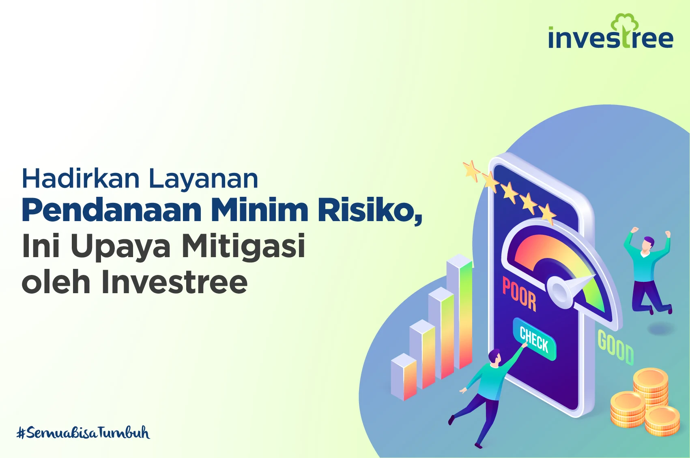
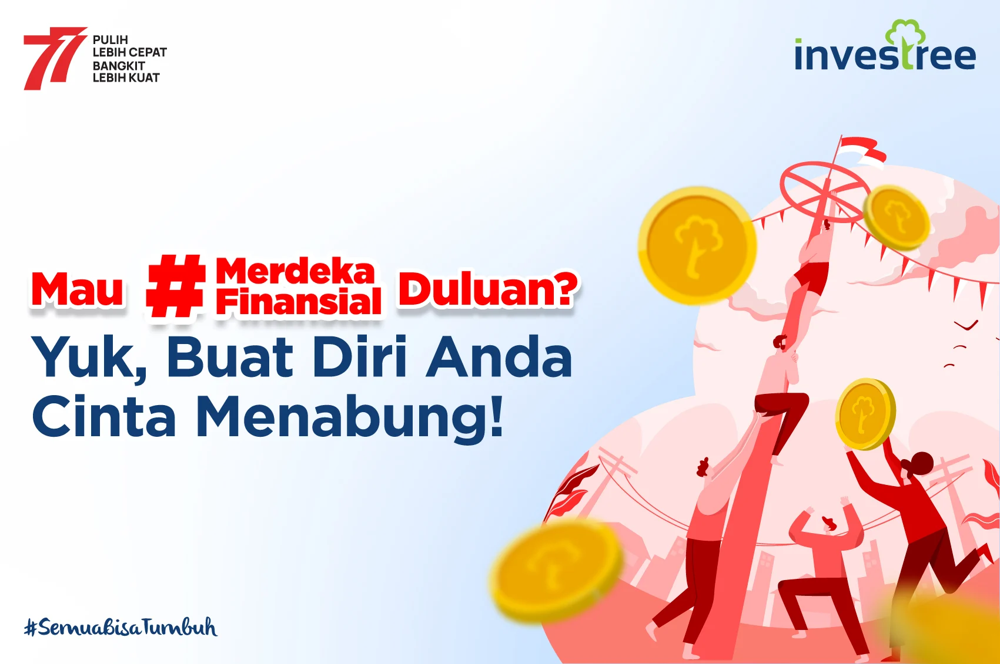
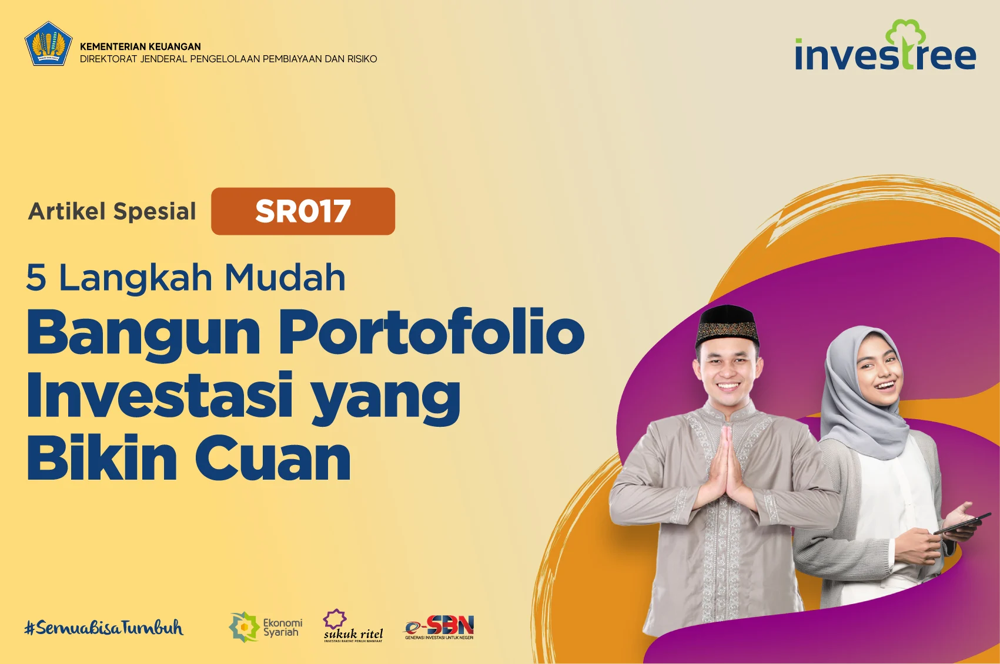

Hadirkan Layanan Pendanaan Minim Risiko, Ini Upaya
Mitigasi oleh Investree

Anda pasti tahu kalau sebagai lender di Investree, Anda
akan mendanai pinjam produktif dari borrower yang telah
berbadan hukum atau berstatus PT/CV. Hal ini memberikan
keuntungan tersendiri karena pendanaan Anda jadi lebih
terukur dari segi risiko. Kenapa bisa begitu? Pendirian
badan usaha menunjukkan suatu bisnis telah berdiri
sendiri sebagai sebuah entitas. Terdapat struktur
organisasi yang berlaku sebagai penanggung jawab untuk
menjalankan operasional bisnis. Perputaran cash flow
bisnis juga akan dikelola secara proporsional dan
memiliki detail laporan keuangan yang dapat mencerminkan
kelayakan bisnis tersebut. Dengan kata lain, bisnis yang
berbadan usaha dinilai lebih “dewasa” sehingga mampu
mengelola risiko bisnis dengan lebih baik. Termasuk
dalam menentukan sejauh mana perusahaan mempunyai
kapasitas pengembalian pinjaman jika mengajukan
pinjaman. Investree juga berkomitmen menyalurkan
pinjaman kepada borrower yang didukung oleh payor
perusahaan tepercaya, seperti perusahaan multinasional,
terbuka, dan pemerintahan. Sehingga pembayaran pinjaman
lebih terjamin dilakukan secara tepat waktu sesuai
dengan tenor pinjamannya. Bentuk kerja sama ini tentu
hanya diterapkan oleh perusahaan berbentuk PT. Selain
itu, PT punya kesempatan untuk mengikuti tender
pemerintah dalam rangka mengembangkan bisnis. Proyek
semacam itu juga dibiayai oleh Investree dan Anda dapat
turut mendanai. Kenali ragam produknya di sini.
Investree bekerja sama dengan platform pengadaan
elektronik (e-procurement) seperti Pengadaan.com dan
Mbiz.co.id untuk memfasilitasi vendor mereka yang
berhasil memenangkan tender di LKPP/LPSE ke akses
permodalan. Para vendor bisa menjaminkan tagihan
(invoice) yang belum dibayarkan oleh penyelenggara
tender atas pekerjaan yang sudah selesai, atau bisa juga
berupa Surat Perintah Kerja (SPK). Ini membuat proses
monitoring dapat dilakukan dengan lebih mudah untuk
mengurangi risiko.
Wajib Tahu! 5 Tips Sukses Berbisnis ala Crazy Rich
Kegagalan dalam bisnis sering kali membuat mental down.
Tapi, berhenti mengeluh dan berpikiran terbuka adalah
solusi terbaik. Banyak bisnis sukses tak langsung
berhasil hanya dalam satu kali coba. Sebut saja Achmad
Zaky. Founder Bukalapak ini sebelumnya pernah membuka
bisnis mie saat masih duduk di bangku kuliah. Namun,
usahanya tak berjalan mulus dan akhirnya tutup. Tak
menyerah, dia pun lalu mendirikan Deft Technology yang
menjadi cikal bakal terbentuknya Bukalapak. Tak jauh
berbeda dengan Nadiem Makarim. Di awal kemunculannya,
bisnis Gojek yang didirikannya pernah menjadi zombie
karena tak kunjung menemukan investor. Tapi dia tak
menyerah, hingga akhirnya sekarang Gojek berhasil
menyandang status decacorn. Ya, menurut statistik yang
dilansir dari Mission.org (Medium.com), sekitar 80—90
persen startup mengalami kegagalan pada percobaan
pertama, dan mereka menyerah tanpa mengetahui bahwa
kesuksesan bisa lebih manis pada kesempatan kedua. Nah,
coba buat daftar tujuan Anda dan rencana untuk
melakukannya satu per satu. Jika Anda gagal, tetap
lanjutkan misi dan kembali ke misi yang gagal itu selang
2—4 bulan setelahnya, disertai sedikit modifikasi.
Mau #MerdekaFinansial Duluan? Yuk, Buat Diri Anda Cinta
Menabung!

Saat akan melakukan perubahan gaya hidup atau mencapai
suatu resolusi, Anda harus memiliki tujuan yang jelas.
Tujuan ini yang akan mengawal Anda tetap berada di jalur
yang benar. Banyak orang gagal saat berencana diet dan
membentuk badannya karena tidak ada goals yang serius.
Mereka melakukannya dengan santai, tidak ada deadline
tertentu, atau bahkan hanya sekedar ikut-ikutan tren.
Tapi coba jika semua tergerak dari dalam diri Anda,
mungkin ada suatu peristiwa yang akhirnya membuat Anda
sadar untuk melakukan diet dan berolahraga, tujuan itu
yang akan mengikat Anda. Bahkan jika membutuhkan waktu
yang lama. Nah, kecintaan terhadap menabung bisa Anda
bangun dengan memiliki tujuan yang dapat menyemangati
Anda. Misal, tujuan Anda menabung adalah untuk biaya
sekolah lanjutan, membeli rumah, atau kendaraan impian.
Dengan begitu, Anda akan selalu berusaha menyisihkan
uang untuk ditabung agar tujuan tersebut dapat segera
terwujud.
5 Langkah Mudah Bangun Portofolio Investasi yang Bikin
Cuan

Apa, sih, yang dimaksud dengan manajemen uang? Sebuah
strategi yang digunakan investor untuk mengatur
penempatan dana modal. Dana investasi Anda sebaiknya
jangan ditempatkan pada satu instrumen investasi saja.
Misal, dari 100% dana investasi, alokasikan sebanyak
18–20% untuk tabungan yang memiliki tingkat likuiditas
tinggi. Sebanyak 30–35% bisa Anda tempatkan di
saham/reksa dana, 30–35% tempatkan di surat
berharga/obligasi, dan sisanya bisa ditempatkan dalam
bentuk investasi emas atau properti. Tapi balik lagi,
besar dana yang ditempatkan pada masing-masing instrumen
harus disesuaikan dengan jangka waktu (usia Anda saat
memulainya), dan juga tujuan keuangan Anda. Selain itu,
sesuaikan juga dengan profil risiko, apakah Anda
termasuk konservatif yang lebih memilih investasi risiko
rendah dan aman, ataukah agresif yang lebih memilih
potensi profit tinggi dengan risiko yang tinggi
pula.?Dengan begitu, portofolio investasi yang Anda
miliki dapat memberikan hasil maksimal.
Ingin Penghasilan Tambahan? Jadi YouTuber Juga Bisa Cuan
Untuk bisa menerima bayaran dari YouTube, Anda harus
lebih dulu mengumpulkan saldo sebesar $100 atau lebih
dari jumlah viewer Anda. Misalkan Anda memperoleh $5 per
1.000 viewers, artinya Anda harus mengumpulkan sebanyak
20.000 viewers agar Anda bisa tergabung ke Program Mitra
YouTube yang memungkinkan Anda memperoleh bayaran dari
AdSense. Selain itu, setidaknya kanal YouTube Anda
memiliki minimal 1.000 subscriber dan mencapai 4.000 jam
waktu penayangan yang valid dalam 12 bulan terakhir.
Anda juga harus memiliki akun AdSense yang telah
ditinjau dan disetujui. Google akan memberi Anda 68%
dari pendapatan yang diperoleh melalui tampilan iklan
dengan AdSense. Selain melalui iklan, Anda juga bisa
memperoleh pemasukan dari tautan afiliasi, bekerja sama
dengan suatu produk/brand untuk di-review dengan
menyebutkan produk tersebut dan mencantumkan tautan link
di deskripsi video YouTube agar para penonton Anda yang
tertarik bisa mengakses langsung produk tersebut untuk
melakukan pembelian. Zaman sekarang, banyak cara yang
bisa kita lakukan untuk memperoleh penghasilan tambahan.
Jadi, tak perlu khawatir asal mau mengeksplor diri.
Selain dari YouTube, ada juga cara lain yang tak pakai
ribet, yaitu dari passive income yang Anda peroleh
setiap kali berinvestasi. Ada banyak produk investasi
yang bisa Anda pilih, salah satunya produk pendanaan di
fintech lending.